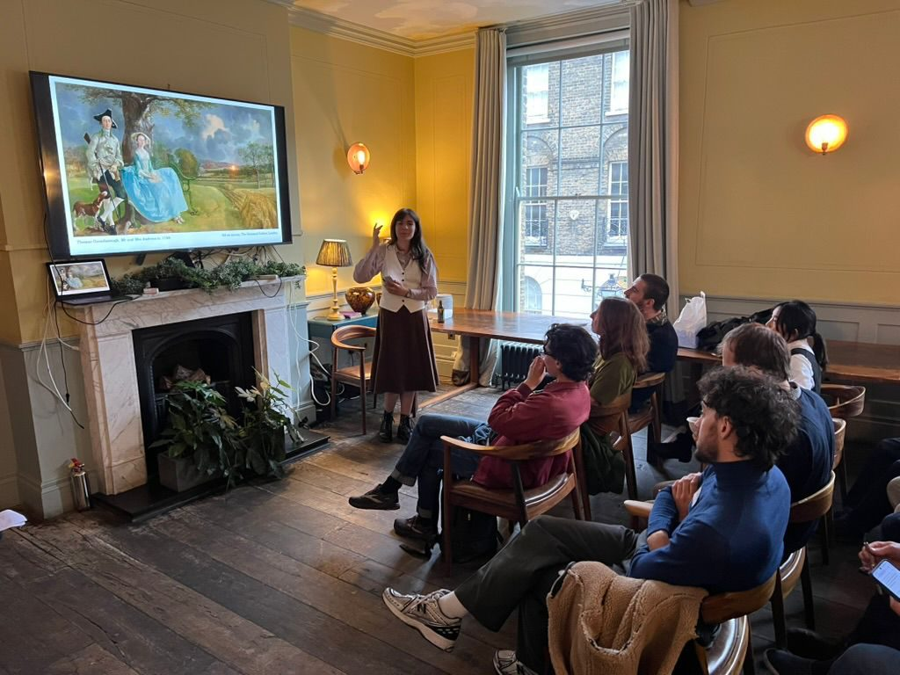
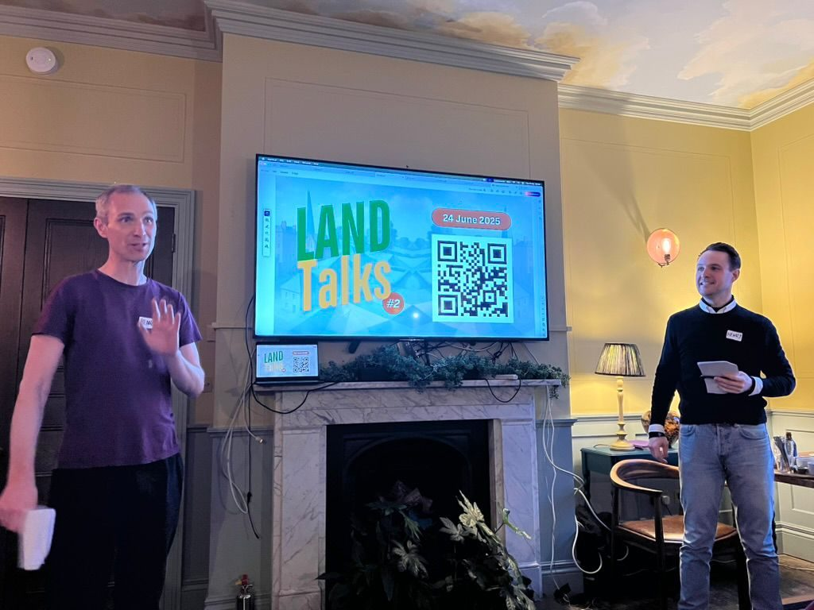

Why land
Britain's oldest bottleneck
- Houses are unaffordable
- Productivity has stalled
- Social mobility has flatlined
Land is key to economic growth and equality of opportunity, yet in Britain we've done almost nothing in decades to unlock our most limited resource.
Given that so many of our biggest challenges stem from how land is owned, regulated, and used, it's time we viewed land with fresh eyes to spark an era of abundance and shared prosperity.
What an evening looks like
Lightning talks, lasting ideas
Each evening features six sharp, informative and inspirational lightning talks, backed by stories or data. Expect:
- Bold takes on how we ended up in the mess we're in
- Inspiring international comparisons
- Personal stories and passion projects
- New organisations making a tangible difference
Throughout the evening, you'll have plenty of time to connect with others passionate about a brighter tomorrow and to dig deeper into the land-related topics that catch your imagination.

From the archive
Provocative talks to spark change
Dozens of brilliant speakers have given talks. To give a flavour, here are three of them, chosen at random:
The spark starters
Who runs it
Co-founded by Francis Irving, co-creator of TheyWorkForYou, and Henry Morris, founder of the social mobility charity upReach, Land Talks is a series of evenings to inspire and connect high-agency people to reimagine land for everyone's benefit.

Join the groundbreakers
Come to the next one
Whether you're an analyst, policy wonk, programmer, policymaker, activist, or simply passionate about a brighter, more abundant future, join us at Land Talks to make Britain's land system work harder for everyone's benefit.
See dates & book